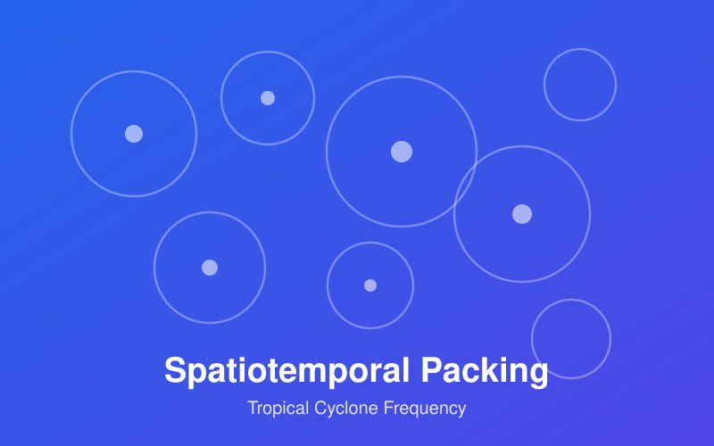
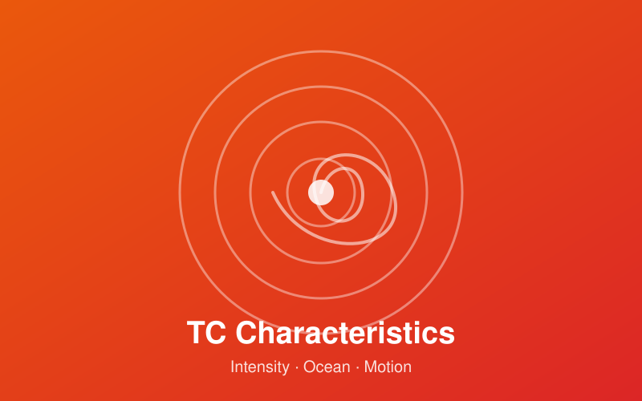

My research interests, organized into a few ongoing threads. Click any topic to read more.

Proposes a framework showing that global tropical cyclone (TC) frequency emerges from the spatiotemporal packing and self-organization of the tropical climate system under finite environmental constraints — linking spatial convective organization, genesis interval statistics, and TC lifecycle effects.
阅读详情 →Develops an entropy-based Hierarchical Organization Index (HOI) and a dual-metric framework integrating size hierarchy and spatial clustering, identifying an adaptive structure-optimal infrared brightness temperature threshold and its long-term cooling trend.
阅读详情 →
Reveals changes in TC intensity, air-sea interaction, and motion variability by decomposing lifetime maximum intensity into intensification rate and duration, quantifying the weakening of TC-induced ocean cooling, and identifying increasing track curvature.
阅读详情 →